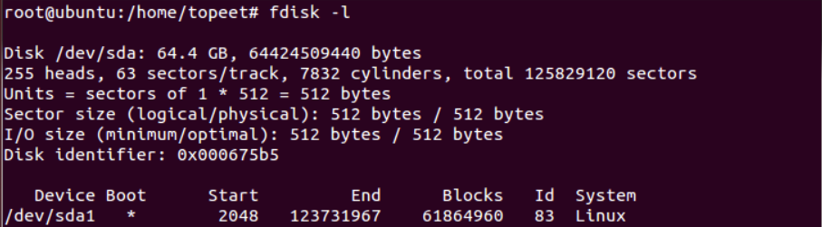
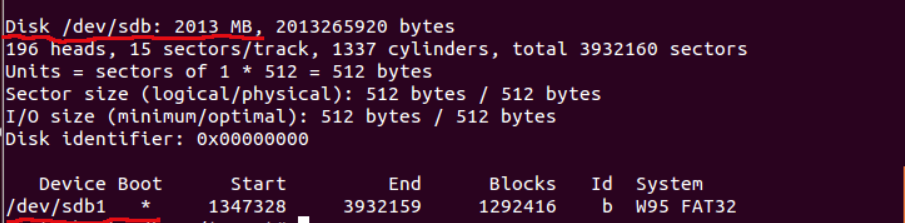

USB接口的U盘对于linux系统而言是当作SCSI设备对待的。
mount命令
1. 格式
1 | mount <操作> <挂载点> [<目标>] |
2. 注意点：
- linux系统中只能在root权限用户下挂载设备
- 磁盘文件系统也是有要求的，常见文件系统有autofs、coda、Ext2、Ext3、Ext4、VFAT、ISO9660（光盘或者光盘镜像）、UFS（Unix File System，Unix文件系统）、FAT（File Allocation Table，文件分配表）、FAT16、FAT32、NTFS（New TechnologyFile System）等。不同的linux系统兼容的文件系统也不一样，也要按实际情况确认。
如何挂载
1. 插上USB优盘前，查看系统的磁盘列表
- 已挂载的硬盘，/dev/sda1
1
fdisk -l
2. 插上USB优盘后，查看系统的磁盘列表
- 挂载USB，/dev/sdb1
1
fdisk -l
3. 创建挂载目标
- 一般挂载目标会在/mnt目录下，创建挂载目录
1
2cd /mnt
mkdir usb
4. 挂载
1 | mount /dev/sdb1 /mnt/usb |
5. 查看USB目录内容
1 | cd /mnt/usb |
如何解除挂载
1 | umount /mnt/usb |
小结
- 此篇也是抛砖引玉，其实可以挂载的介质不仅限于USB优盘，其他包括硬盘、磁盘阵列、CDROM、DVD等，在linux使用时都需要进行挂载，挂载方式与USB优盘挂载类似；
- 遵循规范，不同介质在挂载时/mnt目录下创建的挂载目录也要按介质取名，譬如挂载CDROM，那么就是/mnt/cdrom